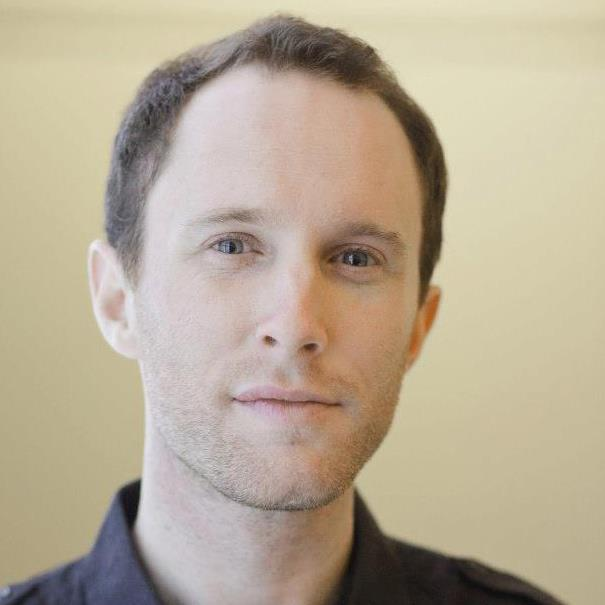

Political Analyst & Strategist
{{description}}
I'm the co-host of 2 Dope Boys & a Podcast (named a top ten best business podcast by INC) and a contributor and Monday host of the four-time award-winning progressive political talk show The Majority Report. I've been a guest analyst on The Young Turks, Al Jazeera, CCTV and France 24. Written words for Al Monitor, the Washington Post and PSFK. I also do a lot of questionable impressions from "Maoist Bernie" to Right Wing Mandela.
As a strategist, I've worked with brands and non-profits to create cultural insight and anthropologically grounded research. I studied at Middle East Technical University in Ankara Turkey and I have a BA from Bates College in international politics.
2 Dope Boys & a Podcast is a twice weekly trend, research and insight show co-hosted by Michael Brooks and Phil Mckenzie. It's an entertaining, irreverent and smart look at race, economics and how to build a smarter, fairer and more interesting future. Subscribe here! Or check us out on Stitcher!
You can hear me five days a week and in the captain's chair on the four-time award-winning Majority Report. We are independent and left wing. Check out some of my work for MR: here and here.
You can reach me through email or over any of my social feeds to book appearances. I also give keynotes and participate in panels, contact me for more information.
You can support me doing my work here. Any and all donations help support the work and the process. Thank you so much!